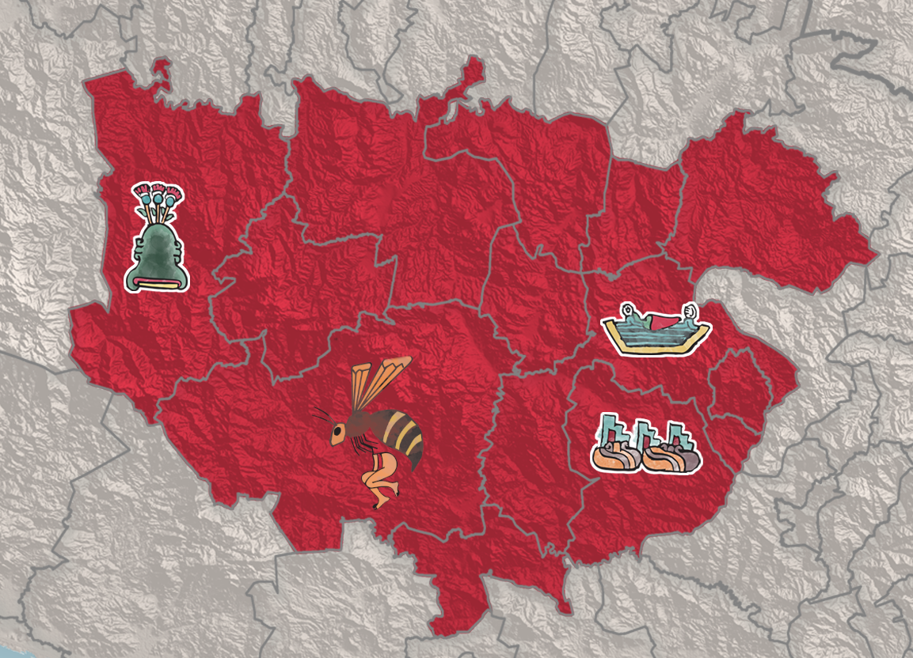
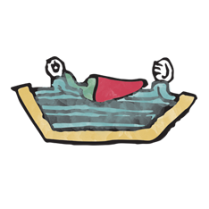
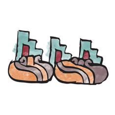

Topónimos
Museo Regional de Guerrero

Centro

Municipio:
Chilapa de Álvarez
Chilapan
Municipio:
Gral. Heliodoro Castillo
Tlacotepec

Municipio:
José Joaquín de Herrera
Tenanco
Municipio:
Chilpancingo de los Bravo.
Chilpantzinco